подключение к telnet 192.168.199.8 80
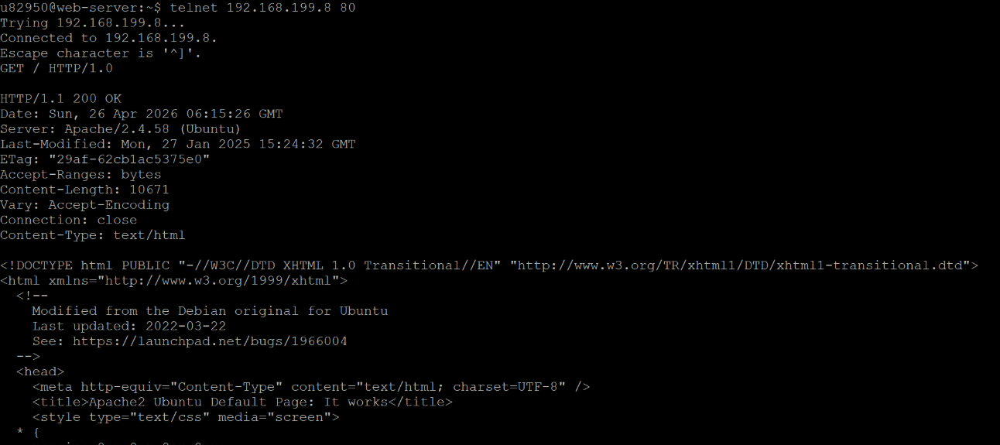
Главная страница
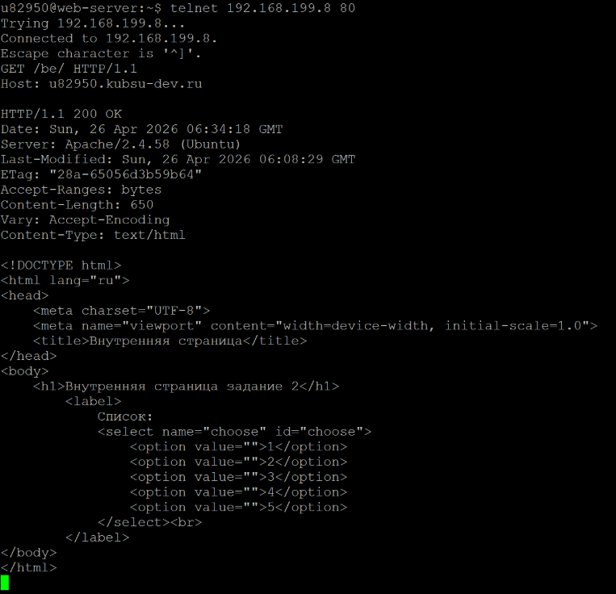
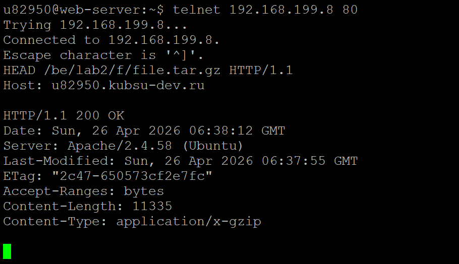
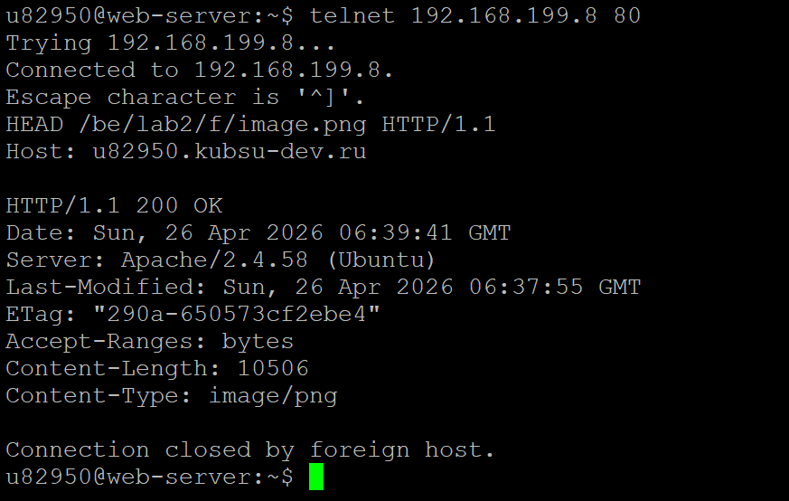
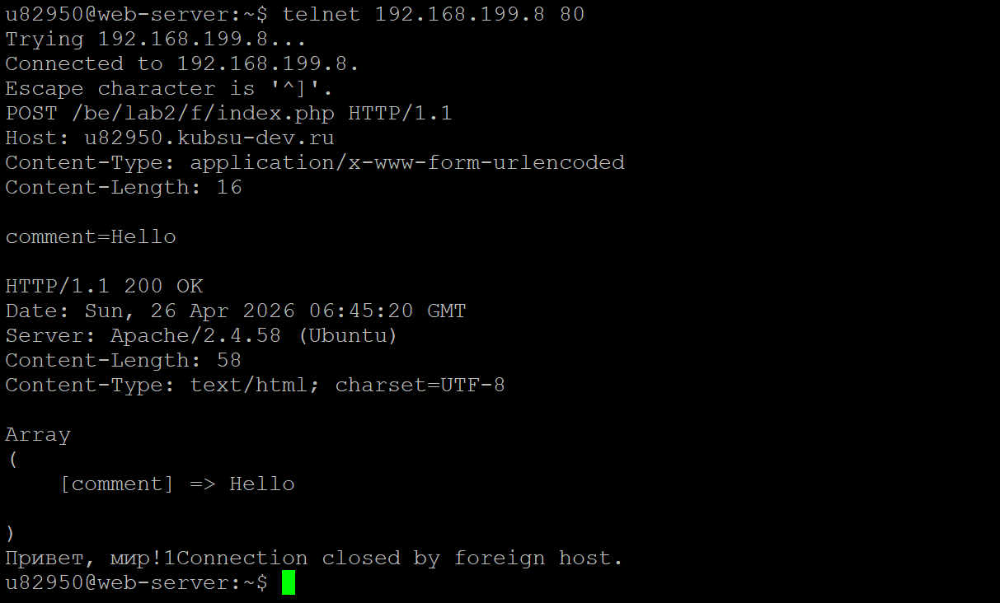
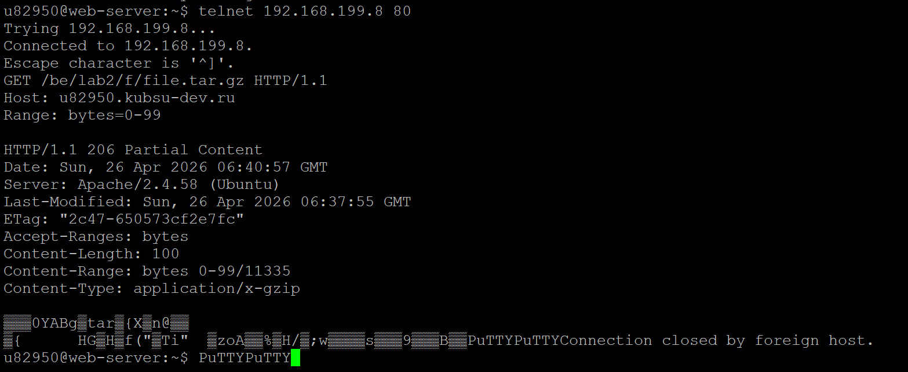
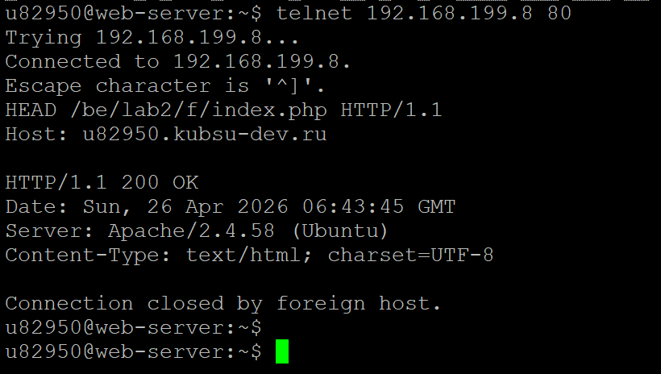
Внутренняя страница
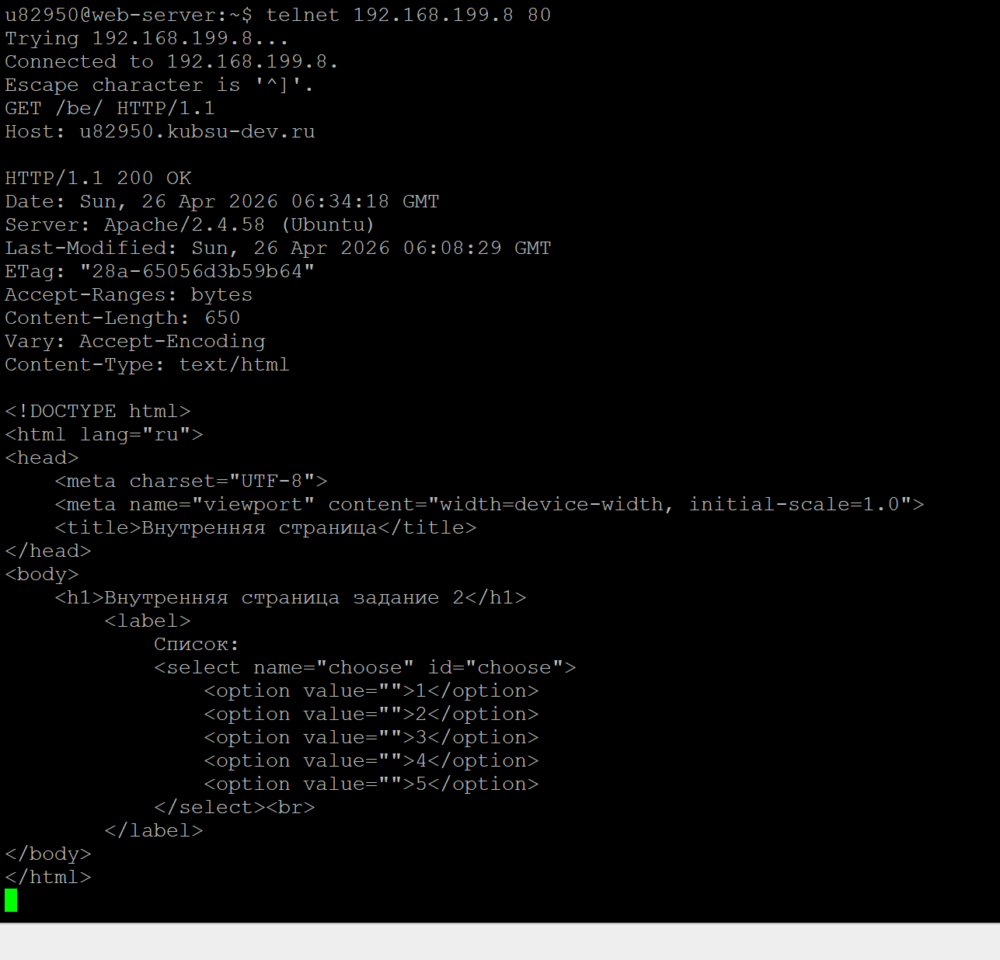
Нахождение размера файла file.tar.gz с помощь метода HEAD и HTTP/1.1
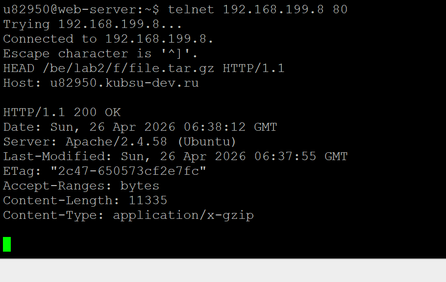
Нахождение медиатипf файла image.png с помощь метода HEAD и HTTP/1.1
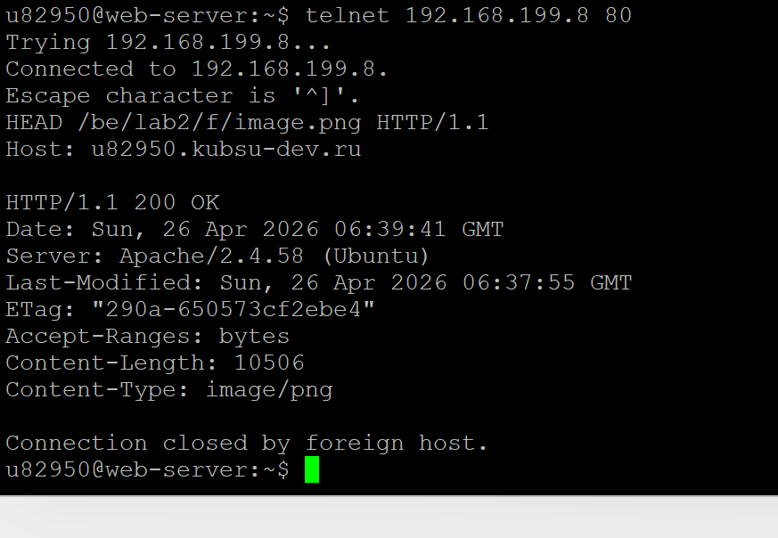
Отправка комментария методом POSt
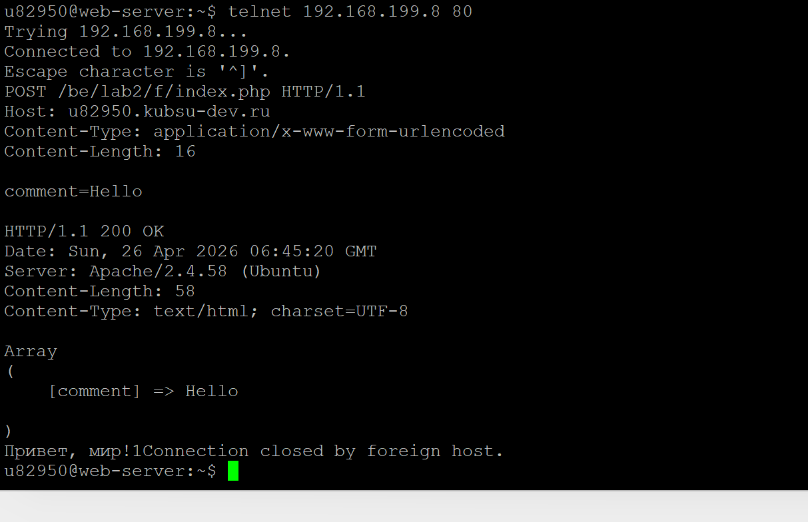
Первые 100 байт файла file.tar.gz с помощью метода GET и Range: bytes=0-99
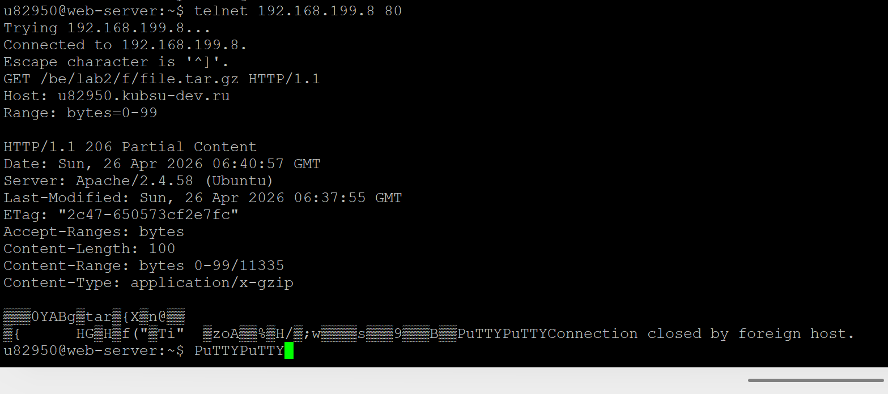
Определение кодировки методом HEAD
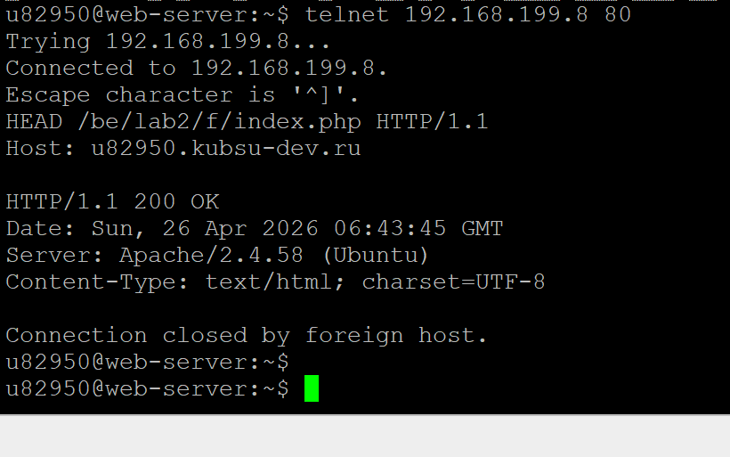